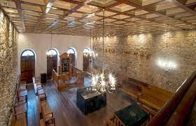

Centro Cultural Judaico de Pernambuco
O Centro Cultural Judaico de Pernambuco é um espaço dedicado à preservação e difusão da cultura judaica em Recife, capital de Pernambuco.
Localizado no bairro de Casa Forte, o Centro Cultural Judaico de Pernambuco possui uma ampla programação cultural que inclui exposições, palestras, shows, exibições de filmes e eventos comemorativos das datas mais importantes do calendário judaico.
Além disso, o Centro Cultural também oferece visitas guiadas para que os turistas possam conhecer mais sobre a história e a cultura judaica em Pernambuco.
O Centro Cultural Judaico de Pernambuco é um importante espaço de preservação da cultura judaica em Recife e uma excelente opção de passeio para quem deseja conhecer mais sobre a história e a cultura da comunidade judaica em Pernambuco.
